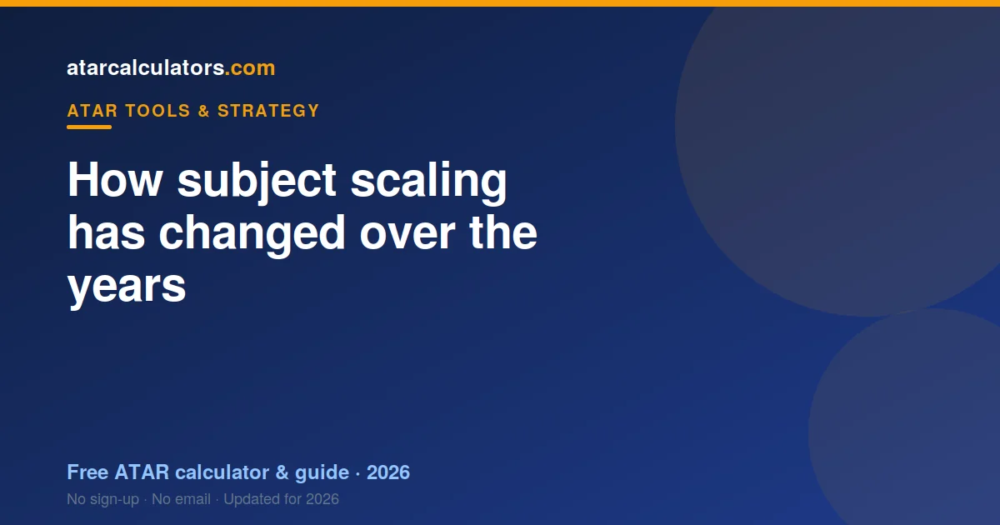
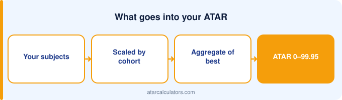

Subject scaling shifts slightly each year as cohort strength and subject enrolments change. Between recent years, the broad order has stayed stable: the higher maths, sciences and small-cohort languages remain the top scalers. What changes are the exact figures, which move a little as cohorts change. Scaling is not systematically getting tougher; it simply tracks each year’s students.
Key takeaways
- Scaling shifts slightly each year with cohorts and enrolments.
- The broad order has stayed stable in recent years.
- The higher maths, sciences and languages remain top scalers.
- What changes are the exact figures, not the overall pattern.
- Scaling is not systematically getting tougher.
- Always use the latest official figures for your state.

Why scaling shifts each year
Scaling is recalculated every year, from scratch, using that year’s cohorts. Because the students who take each subject change slightly from year to year, so does the scaling.
If a subject’s cohort is a little stronger one year, its scaling rises slightly. If enrolments broaden, its scaling can ease. These are small, gradual movements, not sudden swings.
So year-to-year change is normal and expected. It is the system doing its job: tracking the actual strength of each subject’s students, rather than freezing an old figure in place.
What has stayed stable
The reassuring news is that the broad picture is stable. In recent years, the same families have sat at the top: the higher mathematics, the sciences, and small strong-cohort subjects like Latin and continuers languages.
A student planning subjects can rely on this stability. The subjects that scaled well a few years ago still tend to scale well now, because the type of student they attract has not fundamentally changed.
So while exact figures move, the overall order is a dependable guide. You are unlikely to see a top-scaling subject suddenly collapse, or a broad-entry subject leap to the top.
What has moved
Within that stable order, individual subjects shift a little. A subject might scale slightly higher one year and slightly lower the next, as its cohort and enrolment change.
Subjects with growing or shrinking enrolments tend to see the most movement, because a changing cohort changes the scaling. But even these movements are usually modest, a point or two rather than a wholesale change.
The practical upshot: do not treat a single year’s figure as exact. Look at the recent pattern for a subject, which gives a steadier sense than any one year.
How enrolments affect scaling
Enrolment is one of the main drivers of change. When a subject grows and draws a broader range of students, its cohort strength can dilute, easing its scaling. When it shrinks to a select group, scaling can rise.
This is why some smaller subjects scale so highly: their enrolments are small and their students strong. And it is why very broad subjects tend to scale modestly, whatever their content.
So enrolment trends are worth a glance if you are choosing a subject partly for scaling. A subject that is broadening may scale a little lower over time.
Is scaling getting tougher?
Students sometimes feel scaling is getting harder, but there is no systematic trend making scaling tougher overall. Scaling simply redistributes: some subjects rise a little, others ease, year to year.
What can feel like “tougher scaling” is often just a subject moving slightly, or a student comparing their raw mark to their scaled mark without understanding the mechanism. See how scaling works.
So do not plan around a fear that scaling is steadily worsening. Plan around the stable pattern and the latest figures, which is all the information you actually need.
State differences over time
Each state scales independently, so trends can differ slightly between states. A subject’s movement in one state does not necessarily match the same-named subject elsewhere.
This is another reason to use your own state’s information. National generalisations are useful for the broad pattern, but for your decisions, your state’s recent figures are what count.
What this means for planning
The takeaway for planning is calm and simple. Rely on the stable order of scaling families, use the latest official figures for your state, and do not over-react to a single year’s number.
Above all, keep scaling in its place: a tiebreaker between subjects you could do well in, not the driver of your choices. Your performance still matters far more than a point of scaling movement.
Use the latest figures
Because figures move, always work from current data. Our ATAR scaling calculator uses the latest official scaling to show how each subject scales now, not several years ago.
That keeps your planning grounded in reality rather than an outdated list. Current figures, plus the stable pattern, are all you need.
How to track a subject over time
If you want to judge a subject’s scaling trend, look at its scaled mean across the last few scaling reports, not just one year. A single year can be noisy; a few years reveal the real trajectory.
Most subjects show a gentle line: steady, with small movements up or down. A subject drifting down over several years may have a broadening cohort, while one drifting up may be narrowing to stronger students.
This multi-year view is far more useful than reacting to one year’s figure. It tells you whether a shift is a genuine trend or just normal year-to-year noise.
Why students misread trends
Students often misread scaling trends by comparing their own raw mark to their scaled mark and concluding scaling “got harder”. But that comparison reflects how the subject scales, not a change over time.
Others compare figures from different states, which are not comparable, or use an old list that no longer matches the current year. These are the usual sources of the “scaling is getting tougher” feeling.
The remedy is to use current, same-state figures and to understand the mechanism. See how scaling works to avoid misreading your own results.
New subjects and scaling
When a new subject is introduced, its scaling is uncertain at first, because it has no established cohort. Early figures can move more than usual as the subject settles and its enrolment pattern becomes clear.
So treat a brand-new subject’s scaling with extra caution. Give it a few years to establish a stable pattern before relying on its scaling for planning.
Planning around change
Because figures move, plan around the stable pattern rather than a single number. The families that scale well, higher maths, sciences and small-cohort subjects, are dependable, even as exact figures shift.
Then use the latest report to fine-tune. This two-layer approach, stable pattern plus current figures, keeps your planning both grounded and up to date, without over-reacting to normal year-to-year movement.
A calm way to think about it
The calm way to think about scaling change is this: expect small movements, rely on the stable pattern, and use current figures. Nothing about scaling change should cause panic or drive a drastic subject choice.
Your performance still matters far more than a point of scaling movement. Keep scaling in its place, a minor tiebreaker, and year-to-year change becomes a detail rather than a worry.
Common questions
Has ATAR scaling changed in recent years?
Yes, but modestly. Scaling shifts slightly each year as cohorts and enrolments change, while the broad order stays stable. The higher maths, sciences and small-cohort languages remain the top scalers.
Why does scaling shift each year?
Because scaling is recalculated every year from that year’s cohorts. As the students taking each subject change slightly, so does its scaling. These are usually small, gradual movements.
Which subjects have changed the most?
Subjects with growing or shrinking enrolments tend to move most, because a changing cohort changes the scaling. Even so, the movements are usually modest, a point or two rather than a wholesale change.
Is scaling getting tougher?
There is no systematic trend making scaling tougher overall. Scaling redistributes year to year, with some subjects rising and others easing. It simply tracks each year’s students.